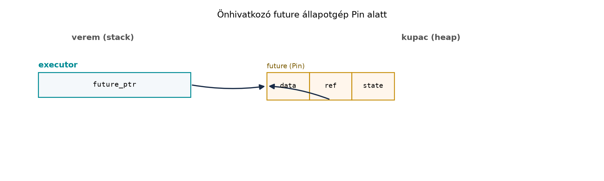

Tegyük fel, hogy egy C++ osztály saját tagjára mutató pointert tárol. Ha az objektumot áthelyezzük (move), a pointer elavulhat, ha a move konstruktor nem frissíti:
#include <vector>
struct SelfRef {
std::vector<int> data;
int* p;
SelfRef(int x) : data{x}, p{&data[0]} {}
SelfRef(SelfRef&& other) noexcept : data(std::move(other.data)), p(&data[0]) {}
};Ha a move konstruktor elfelejti a p frissítését, a
p a régi, már érvénytelen memóriaterületre mutat. A Rust
async/await modelljében a fordító által generált future-ök gyakran
hasonlóan önhivatkozóak: a future egy belső állapotgépet tartalmaz,
amelyben a helyi változók egymásra hivatkozhatnak. Ha ezt a future-t
megmozgatnánk, a belső referenciák érvénytelenné válnának. A Rust ezt a
Pin típussal és az Unpin automatikus traittel
zárja ki.
Definíció. A Pin<P> egy olyan
wrapper, ahol P pointer típus – leggyakrabban
&mut T vagy Box<T>. Ha
T nem Unpin, a
Pin<P> garantálja, hogy az általa mutatott
T érték a Pin élettartama alatt nem
mozdul el a memóriában. A garancia azt jelenti, hogy a
Pin<&mut T>-ből nem kaphatunk közvetlen
&mut T hozzáférést, így nem hívhatunk olyan műveletet,
amely a T-t mozgatná (például mem::swap,
mem::replace).
Definíció. Az Unpin egy automatikus
trait. Ha egy típus Unpin, akkor biztonságosan mozgatható
pinned állapotban is. A legtöbb primitív és standard típus
(i32, String, Vec<T>)
Unpin. A generált async future-k általában
nem Unpin, mert önhivatkozóak lehetnek. Ha
T: Unpin, akkor Pin<&mut T>
egyszerűen &mut T-re dereferálható.
Szabály. A Future trait
poll metódusának aláírása:
fn poll(self: Pin<&mut Self>, cx: &mut Context<'_>) -> Poll<Self::Output>;A self: Pin<&mut Self> azt jelenti, hogy a
poll implementáció csak pinned referencián keresztül kapja meg a
future-t. Ezért a jövőbeni poll hívások között a future nem
mozgatható, és a belső önhivatkozások érvényesek maradnak.
A Pin létrehozásának leggyakoribb módjai:
Box::pin(future) – heapre pin-neli a future-t,
Pin<Box<F>> típust ad vissza. Ez akkor hasznos,
ha a future-t hosszabb ideig szeretnénk tárolni, például egy
tokio::spawn-hoz.std::pin::pin! makró – stackre pin-neli az értéket,
Pin<&mut T>-t ad.unsafe Pin::new_unchecked – csak akkor, ha
a fejlesztő garantálja, hogy a T nem mozdul a
Pin élettartama alatt.A Pin projekció a pinned struktúra mezőinek elérését
jelenti. Ha egy !Unpin típusba beágyazott mezőt szeretnénk
elérni, nem kapunk közvetlen hozzáférést, mert a mező mozgatása sértheti
a garanciát. Ezt unsafe blokkal vagy erre szolgáló
crate-ekkel (például pin-project) lehet megoldani; a
részletes projekció kívül esik a jelen alfejezet hatókörén.
C++-ban az önhivatkozó objektumok mozgatása a fejlesztő felelőssége,
és a move konstruktorban kell frissíteni a belső mutatókat. Rustban ezt
a kölcsönzés-ellenőrző és a Pin együttese szabályozza. Az
async függvény által generált future egy olyan struktúra, amely a helyi
változókat tartalmazza, és a köztük lévő kölcsönzéseket a generált
kódban referencia-mezőkként reprezentálja. A Rust fordító ezt a future-t
!Unpin-ként jelöli, így a poll-hoz csak
Pin<&mut Self>-et használhatunk, ami kizárja a
mozgatást.
async fn example() {
let mut data = vec![1, 2, 3];
let r = &data;
tokio::time::sleep(std::time::Duration::from_millis(100)).await;
println!("{:?}", r);
}Ebben a példában a r referencia a data-ra
mutat, és az await alatt is él. Ha a future-t
megmozgatnánk, a r elavulna. A Pin garancia
miatt ez nem történhet meg.
Rc a future-ben és a Send-határA tokio::spawn megköveteli, hogy a future
Send + 'static legyen, mert a tokio más szálakra is
mozgathatja a taskot. A future akkor Send, ha minden benne
birtokolt érték Send. Az Rc nem
Send, mert a referencia-számláló nem atomi. Ez a
leggyakoribb hiba, amikor egy async blokkban Rc-t
használunk, majd megpróbáljuk spawnolni.
Ez a változat szándékosan nem fordul le:
use std::rc::Rc;
use std::time::Duration;
use tokio::time::sleep;
async fn bad_future() {
let data = Rc::new(vec![1, 2, 3]);
sleep(Duration::from_millis(100)).await;
println!("len = {}", data.len());
}
#[tokio::main]
async fn main() {
tokio::spawn(bad_future());
}A hiba lényege (a pontos szöveg verziófüggő):
future cannot be sent between threads safely, és a
diagnosztika megjelöli az Rc-t mint nem Send
típust. A javítás: std::sync::Arc használata.
use std::sync::Arc;
use std::time::Duration;
use tokio::time::sleep;
async fn good_future() {
let data = Arc::new(vec![1, 2, 3]);
sleep(Duration::from_millis(100)).await;
println!("len = {}", data.len());
}
#[tokio::main]
async fn main() {
tokio::spawn(good_future());
}Az Arc atomi számlálót használ, ezért
Send + Sync, így a future megfelel a követelménynek. A
tokio::spawn maga pin-neli a future-t a heapre, ezért nincs
szükség explicit Box::pin-re.
Hasonló probléma lép fel, ha tokio::sync::MutexGuard-ot
tartunk egy .await-en át. A
tokio::sync::MutexGuard nem Send, mert a tokio
async mutex garanciája szerint a guard-ot ugyanabban a task contextben
kell elengedni. Ha a guard életben van az await alatt, a
future nem lesz Send. A javítás: szűkítsük a lock
élettartamát egy belső blokkra.
use std::sync::Arc;
use std::time::Duration;
use tokio::sync::Mutex;
use tokio::time::sleep;
async fn safe(mutex: Arc<Mutex<i32>>) {
{
let guard = mutex.lock().await;
println!("value = {}", *guard);
} // guard itt elengedjük
sleep(Duration::from_millis(100)).await;
// itt már nincs guard a future-ben
}A std::sync::MutexGuard lehet Send (ha a
védett típus Send), de a szinkron mutex blokkolja a szálat,
ami async kontextusban kerülendő. A tokio async mutex használata a
helyes, de a guardot nem szabad .await-en át tartani.

Az ábra azt mutatja, hogy a future a heapre kerül, és a
Pin miatt a címe rögzített. A future struct egyik mezője
(data) a tényleges adatot tartalmazza, egy másik mezője
(ref) a data-ra mutat. Ha a future-t
megmozgatnánk, a ref elavulna; a Pin ezt
akadályozza meg.
A Rust stabilizálta az async fn-eket trait-ekben (Async Fn in Trait,
AFIT). Ez lehetővé teszi, hogy egy trait metódusa async legyen. Fontos
azonban: a dyn trait objektum nem tud közvetlenül async
metódust hívni, mert az async fn visszatérési típusa
impl Future<Output = ...>, ami opak típus, és ezért
nem dyn-kompatibilis. A dyn Trait-ekhez vagy az async_trait
crate-et szokták használni (amely
Box<dyn Future + Send>-t állít elő egy makróval),
vagy enum-alapú dispatch-et. A stabilizálás pontos részletei és a
dyn-kompatibilis async trait-ek esetleges későbbi kiterjesztései
verziófüggőek, ezért a konkrét Rust-verzió dokumentációját ellenőrizni
kell.
A 2024-es editionben a trait-ekben az async fn már használható
statikus generikus code-hoz (például
fn f<T: MyTrait>(t: T) -> impl Future<...>),
de a dyn MyTrait objektumokon továbbra is korlátok vannak.
Ezért a gyakorlatban a trait-objektumos async kódnál gyakran az
async_trait-et alkalmazzák.
Rc a future-ben. Ha Rc-t használunk
egy async blokkban, a future !Send lesz, és
tokio::spawn-nal nem futtatható. Javítás:
használjunk Arc-ot, vagy ne tartsuk az Rc-t az
.await-en át, ha lehetséges.MutexGuard tartása .await
alatt. A tokio::sync::MutexGuard nem
Send; ha az async blokkban a guard az await-ig
él, a future nem lesz Send. Javítás:
zárjuk blokkba a kritikus szekciót, és a guardot az await
előtt engedjük el.Pin félreértelmezése. A
Pin nem a T belső változását tiltja, hanem a
T mozgatását. Nem akadályozza meg például, hogy
&mut T-n keresztül módosítsuk az adatot, ha a típus
Unpin. Csak !Unpin típusoknál korlátozza a
mozgató műveleteket.Box::pin és pin! helytelen
választása. Ha a future-t rövid ideig, egy adott scope-ban
használjuk, a pin! elegendő; ha tárolni kell vagy vissza
kell adni, akkor Box::pin. A
Pin<Box<F>> Send lehet, ha
F: Send, így spawnolható.Továbbvitt eredmény. A Send-határok és
a Pin ismerete alapvető lesz a Tokio:
taskok, I/O, csatornák, select és megszakítás alfejezetben, ahol
spawn-olt taskokat készítünk, és a Az rkv hálózati
szerver alfejezetben, ahol a handler future-öknek
Send-nek kell lenniük, és a megosztott állapotot
Arc<Mutex<...>>-tal vagy
Arc<tokio::sync::RwLock<...>>-kal oldjuk meg. A
Pin garanciáját a Future::poll szignatúra
betartásakor használjuk.
Unpin a
legtöbb generált async future? Mi a különbség a Pin és az
Unpin között?SelfRef osztály, amelyben a move konstruktor elfelejti
frissíteni a pointert. Magyarázd el, hogyan kerüli el a Rust ugyanezt a
hibát a Pin segítségével az async future-ökben.Rc<Vec<i32>>-ot használ, és próbáld
tokio::spawn-nal futtatni. Javítsd Arc-ra, és
indokold, miért lesz a future Send.use std::sync::Arc;
use tokio::sync::Mutex;
use tokio::time::{sleep, Duration};
async fn process(mutex: Arc<Mutex<i32>>) {
let guard = mutex.lock().await;
sleep(Duration::from_millis(50)).await;
println!("value = {}", *guard);
}Modosítsd úgy, hogy a guard ne élje túl az
await-et, és a future Send legyen.
Store-t több task is
eléri. Milyen kombinációt választanál a megosztott
Store-hoz, hogy a handler future-ök Send-ek
legyenek? (Gondolj Arc, tokio Mutex vagy
RwLock használatára, és a lock élettartamának
minimalizálására.)Unpin, mert a fordító
a helyi változókat és a köztük lévő referenciákat egy structba
csomagolja; ha ezt a structot mozgatnánk, a belső referenciák
elavulnának. Az Unpin automatikus trait, amely azt jelzi,
hogy a típus pinned állapotban is mozgatható; a Pin pedig
olyan wrapper, amely a !Unpin típusok mozgatását
akadályozza meg.!Unpin-ek, és a Future::poll
csak Pin<&mut Self>-et kap, így a future nem
mozgatható az élettartama alatt. Ez garantálja, hogy a belső referenciák
mindig érvényesek maradnak, anélkül hogy a fejlesztőnek manuálisan
frissítenie kellene őket.use std::rc::Rc;
use std::time::Duration;
use tokio::time::sleep;
async fn bad() {
let data = Rc::new(vec![1, 2, 3]);
sleep(Duration::from_millis(100)).await;
println!("{:?}", data);
}
#[tokio::main]
async fn main() {
tokio::spawn(bad()); // hiba: future cannot be sent between threads safely
}Javítás Arc-cal:
use std::sync::Arc;
use std::time::Duration;
use tokio::time::sleep;
async fn good() {
let data = Arc::new(vec![1, 2, 3]);
sleep(Duration::from_millis(100)).await;
println!("{:?}", data);
}
#[tokio::main]
async fn main() {
tokio::spawn(good());
}async fn process(mutex: Arc<Mutex<i32>>) {
{
let guard = mutex.lock().await;
println!("value = {}", *guard);
}
sleep(Duration::from_millis(50)).await;
}Store-hoz
Arc<tokio::sync::RwLock<Store>> használata
javasolt. A RwLock lehetővé teszi, hogy több olvasó
egyszerre férjen hozzá, a tokio async lock nem blokkolja a szálat, és a
Store így Send + Sync lesz. A lock-ot mindig
minimalizáljuk: ne tartsuk .await-en át, és a kritikus
szakasz után azonnal engedjük el.A Pin a Rust válasza az önhivatkozó future-ök
mozgatásából eredő memóriabiztonsági problémára. A
Future::poll szignatúrája
self: Pin<&mut Self>, így a future nem mozgatható
a poll hívások között. Az Unpin automatikus trait jelzi,
hogy egy típus pinned állapotban is mozgatható; a generált async
future-k általában !Unpin. Box::pin és a
pin! makró pin-nelt future-öket hoz létre. A
tokio::spawn megköveteli, hogy a future
Send + 'static legyen; az Rc és a
tokio::sync::MutexGuard nem Send, ezért
helyettük Arc-ot és rövid élettartamú lock-okat használunk.
Az async fn traitekben (AFIT) stabil, de dyn-kompatibilis használata
korlátozott; ilyenkor async_trait-et vagy enum-dispatchet
alkalmazunk. Továbbvitt eredmény: a Send-határok és a
Pin ismerete elengedhetetlen a Tokio: taskok, I/O,
csatornák, select és megszakítás és a Az rkv
hálózati szerver alfejezetekhez, ahol spawn-olt taskok és megosztott
állapotok kezelik ezeket.
pin! makró stabilitása
Rust 1.68-tól. A tokio::sync::MutexGuard
Send-hiánya a tokio verziójától függően változhat, ezért a
docs.rs-en ellenőrizni kell.